Questions, bug reports, or feedback about Bull Indicator? Email support@koini.io and we'll get back to you.
Why does an indicator say "estimated"? Our MVRV Z-Score and Puell Multiple source provides free data with a ~7-day delay. We adjust the delayed reading using the live price with a published method — see the Methodology page in the app's Settings tab.
How often does data update? Scores recompute daily around 06:00 UTC. Pull down to refresh in the app.
Does the app tell me when to buy or sell? No. Bull Indicator is educational market context only — it never gives trading advice.